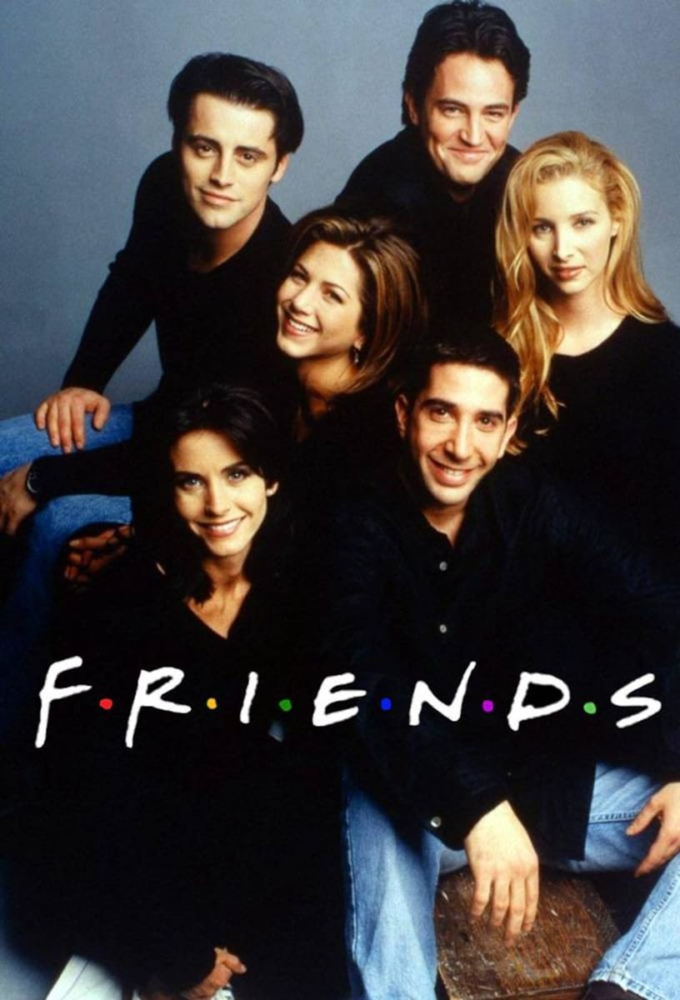
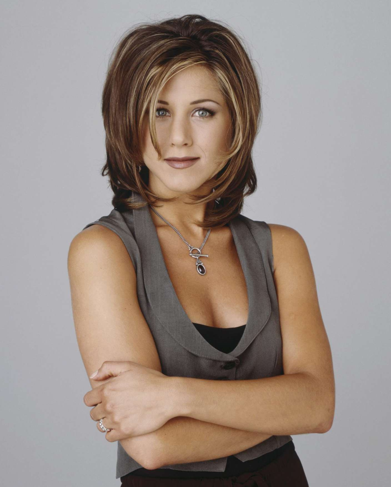

Friends, New York’ta yaşayan altı yakın arkadaşın günlük hayatlarını, aşklarını ve kariyer mücadelelerini eğlenceli bir dille anlatan bir sitcom dizisidir. Rachel, Ross, Monica, Chandler, Joey ve Phoebe’nin dostlukları, kahkaha dolu anları ve duygusal bağları üzerinden ilerleyen hikâye, izleyicilere sıcak ve samimi bir atmosfer sunar. 1994-2004 yılları arasında yayımlanan dizi, esprili diyalogları ve unutulmaz karakterleriyle popüler kültürde önemli bir yer edinmiştir.



Rachel Green
Rachel, dizinin başında zengin bir ailenin şımarık kızı olarak tanıtılır, ancak zamanla bağımsız bir kadın olur. Moda sektörunde kariyer yapar ve Ross ile olan gelgitli aşkı dizinin öne hikayelerinden biridir.
Ross Geller
Ross, grubun entelektüel üyesidir ve paleontolog olarak çalışır. Monica’nın abisidir ve çocukluk aşkı Rachel ile olan ilişkisi, dizinin merkezinde yer alır. Romantik ve sakar tavırlarıyla tanınır.
Chandler Bing
Chandler, keskin espri anlayışı ve alaycı tavırlarıyla tanınır. İşini kimse tam olarak anlamasa da başarılı bir kariyeri vardır. Monica ile olan ilişkisi, karakterin gelişimini en çok etkileyen olaylardan biridir.